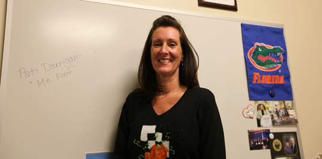

Âgée de 49 ans, Patricia Darrigan est la directrice du centre de don d'organes d'une université de Miami. Elle est inscrite au Parti républicain depuis des années et a toujours voté pour le candidat conservateur à l'élection présidentielle.

Au travail, on la surnomme "Ms Fix-it" (Madame règle tout), car elle est connue pour résoudre les problèmes de son service. Par contre, la solution de Barack Obama pour améliorer le système de santé ne lui plaît guère : "Ça nous coûte beaucoup d'argent et je ne veux pas financer l'assurance maladie de tout le monde".
Cette catholique pratiquante se dit en revanche favorable à l'avortement et au mariage des homosexuels. Son fils de 26 ans, qu'elle a élevé seule, lui a récemment révélé qu'il est gay et qu'il soutient Barack Obama. "Il fait ce qu'il veut, mais pour moi les questions de société ne sont pas celles qui guident mon vote. Je veux surtout que le futur président mette en œuvre une réforme fiscale et Romney s'est engagé à le faire. "
Depuis son bureau, où sont exposées des photos d'elle en compagnie de Jeb Bush, ancien gouverneur de Floride et frère de l'ancien président George W. Bush, elle assure qu'elle n'a rien de personnel contre le président Obama, à part peut-être le fait qu'il est "un peu socialiste".